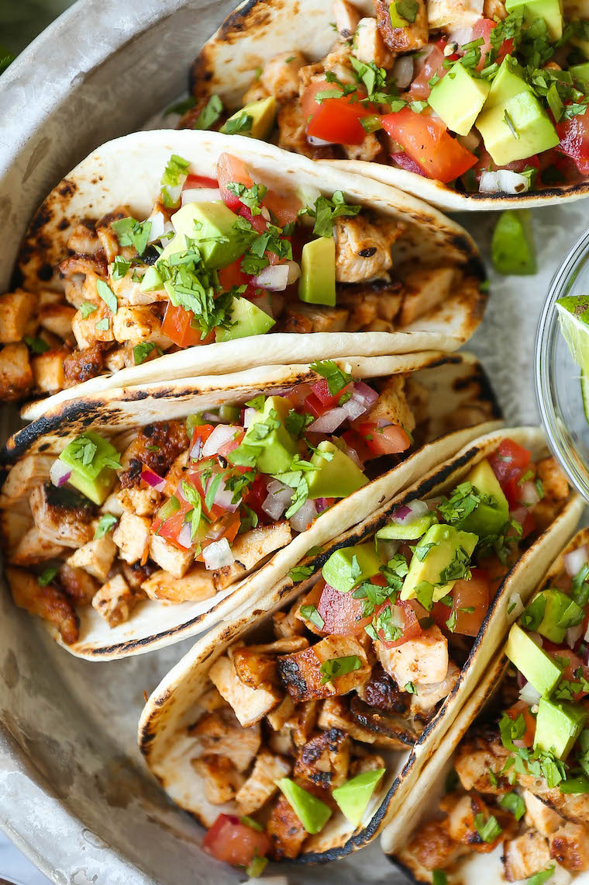

Taco Recipe

Here is a picture of the tacos we made on Wednesday
This is a perfect recipe for a quick weeknight dinner.
Your kids will absolutely love it because of how tasty it is and you will love it because it doesn't
take very long to make
Ingredients
- 2 teaspoons chili powder
- 1 teaspoon ground cumin
- 1 teaspoon smoked paprika
- 1 teaspoon dried oregano
- 1/2 teaspoon garlic powder
- Kosher salt and freshly ground black pepper, to taste
- 1 1/2 pounds boneless, skinless chicken thighs
- 1 tablespoon canola oil
- 12 warmed corn tortillas
- 1 cup pico de gallo, homemade or store-bought
- 1 avocado, halved, peeled, seeded and diced
- 1/2 cup chopped fresh cilantro leaves
- 1 lime, cut into wedges
Steps
- In a small bowl, combine chili powder, cumin, paprika, oregano, garlic powder, 1 teaspoon salt and 1/2 teaspoon pepper. Season chicken with chili powder mixture.
- Heat canola oil in a large skillet over medium high heat. Working in batches, add chicken to the skillet in a single layer and cook until golden brown and cooked through, reaching an internal temperature of 165 degrees F, about 4-5 minutes per side. Let cool before dicing into bite-size pieces.
- Serve chicken in tortillas, topped with pico de gallo, avocado, cilantro and lime.